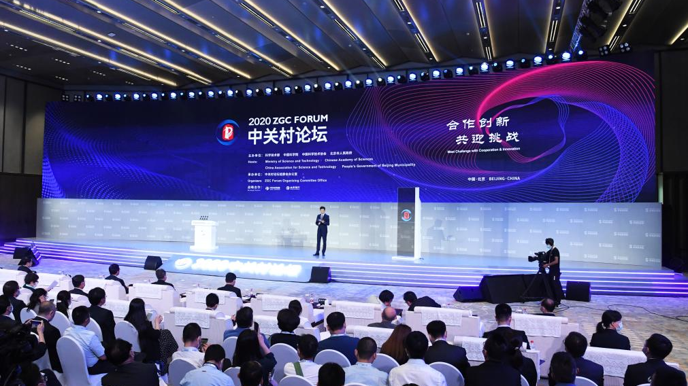

9 Proven Strategies to Build a Skilled IT Support Team in 2025
Contents
Recruiting qualified technical support staff is a cornerstone of delivering exceptional customer service in the IT industry. However, identifying, attracting, and hiring the right talent for technical support roles is often a complex and time-intensive process. This guide provides a detailed exploration of 10 proven strategies that IT companies can implement to build highly skilled ticket support teams capable of meeting ever-evolving customer demands.
1. Recruitment websites and job portals
Recruitment websites and job portals such as LinkedIn, Indeed, Glassdoor and Monster offer IT companies a powerful platform to highlight vacancies for ticket support positions. Creating compelling job postings with detailed descriptions of the roles, skills required, and the company's culture and values can grab the attention of potential candidates.
Additionally, these platforms provide access to a diverse candidate pool, allowing IT companies to reach a wide range of talent, from entry-level support professionals to seasoned experts.
2. Networking and referrals
Networking within the industry and actively seeking referrals from existing employees, industry professionals and business contacts is a proven method for finding highly qualified ticket support candidates.
Harnessing the power of employee referral programs can encourage current employees to recommend suitable candidates for support positions, tap into their extensive professional networks, and create a valuable source of potential new hires.
Real-world success stories from companies that have effectively used employee referrals to attract top talent can serve as inspiration for other organizations.
3. Social media platforms

Using social media platforms such as LinkedIn, Facebook and Twitter to advertise vacancies and connect with potential candidates can significantly increase an IT company's ability to attract talent.
Through targeted vacancies and direct involvement with job seekers, companies can effectively promote their brand and culture. Sharing compelling content that highlights the company's commitment to providing exceptional support and career development opportunities can further pique the interest of potential candidates.
4. Professional associations and events
Participation in industry-specific events, conferences and professional associations related to IT support and customer service provides IT companies with valuable opportunities to network with potential candidates and promote job openings.
By actively participating in these communities, companies can build a strong presence and reputation and position themselves as an employer of choice within the industry.
Sharing specific strategies and success stories from working with professional associations and events can provide practical insights for other companies looking to adopt this approach.
5. Technical communities and forums
By connecting with online technology communities and forums such as GitHub, Stack Overflow and Reddit, IT companies can connect with IT professionals who are actively seeking new opportunities.
These platforms provide companies with a unique space to communicate directly with potential candidates, creating a channel to showcase the company's commitment to innovation and technical excellence. Illustrating examples of successful recruitment stories from interactions with these technology communities can bring the strategy to life and demonstrate its effectiveness.
6. Cooperation with educational institutionsen
Establishing partnerships with educational institutions, including universities and technical colleges, provides ICT companies with the opportunity to recruit graduates who have completed relevant IT support or computer science programs.
Developing internship programs, participating in career fairs and working directly with educational institutions can be very effective in connecting with potential candidates.
Real-world examples of successful recruitment through partnerships with universities and technical colleges can highlight the tangible benefits of this strategy.
7. Training and development of employees

Providing training and development opportunities for existing employees to transition into ticket support roles represents a cost-effective and beneficial internal recruitment strategy for IT companies.
Because existing employees already understand the company culture and operations, transitioning them into support roles can be very efficient. Success stories from employees who have excelled in transition roles and grown within the company can provide inspiring examples of the benefits of this strategy.
8. Freelance platforms
Using freelance platforms such as Upwork and Freelancer to hire temporary or contract ticket support professionals has clear benefits for IT companies.
This approach enables the assessment of candidates for potential permanent positions while providing flexibility in taking on short-term projects.
Real-world experiences and best practices in hiring temporary or contract ticket support professionals can enrich the understanding of this strategy and be used as a benchmark for organizations considering this approach.
9. AI ticket support Solution
Finding new staff with the above options will of course always be a lengthy and sometimes very expensive process. Fortunately, there is an innovative solution that can help companies relieve the pressure and improve the efficiency of their support teams: Ticket Tim.
As an AI-driven assistant, Ticket Tim is the future of support in the IT industry. It automatically and accurately analyzes incoming support tickets, providing fast and consistent solutions. This allows companies to not only reduce workload, but also increase customer satisfaction. With Ticket Tim's seamless integration into existing systems, recruiting support staff becomes a less pressing task.
Ticket Tim
vs
Your Support
Employee
Cost
Productivity
Ticket Resolution
Knowledge
Vacation Time
Automatically Resolve Tickets
24/7 Support
Instant Response
Consistent Quality
10. Final conclusion
In conclusion, the effective implementation of these strategies can enable IT companies to find new ticket support agents and build a dynamic and skilled support team. By combining a mix of strategies that align with the company's goals and culture, organizations can leverage their efforts significantly increase their talent acquisition capabilities and ensure they are well equipped to meet the changing demands of customer support in the ICT industry.
Want to get started with Ticket Tim?
Meet the support solution of the future. Leave manual tickets behind and
embrace the speed of AI.